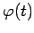
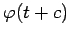

Ist  eine Lösung von (17.1), so ist mit einer beliebigen Konstanten c die Funktion  ebenfalls eine Lösung.
Zwei beliebige Orbits von (17.1) haben keinen gemeinsamen Punkt oder stimmen überein. Der Phasenraum von (17.1) zerfällt also in disjunkte Orbits. Die Zerlegung des Phasenraumes in disjunkte Orbits heißt Phasenporträt.
Jeder Orbit, verschieden von einer Ruhelage, ist eine reguläre glatte Kurve, die geschlossen oder nicht geschlossen sein kann.